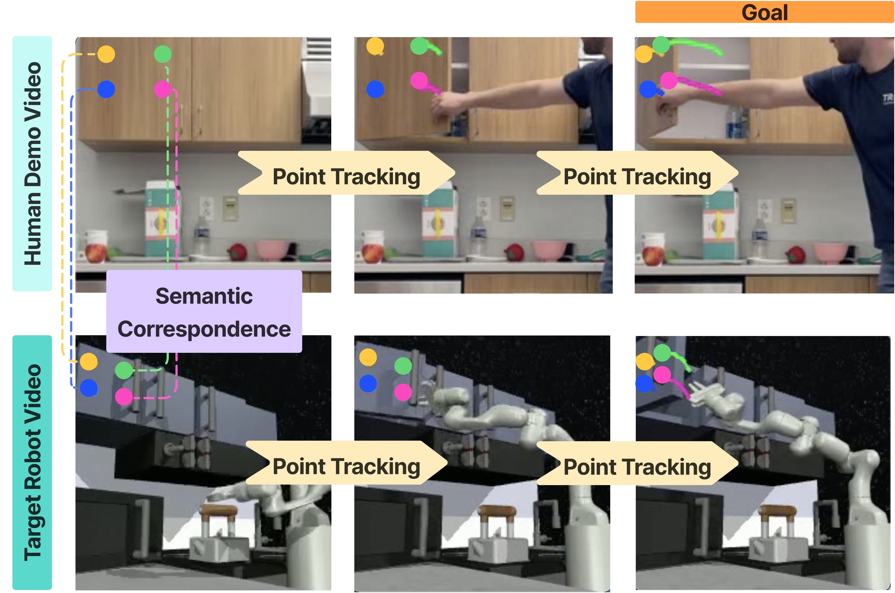
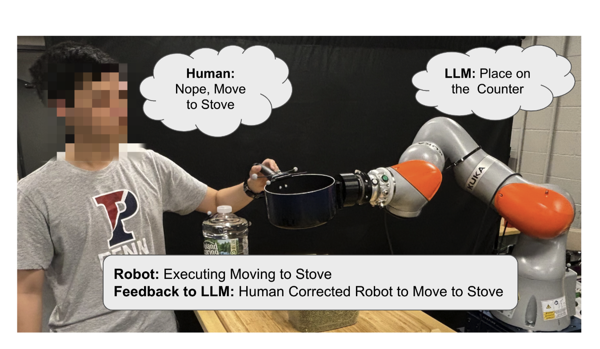
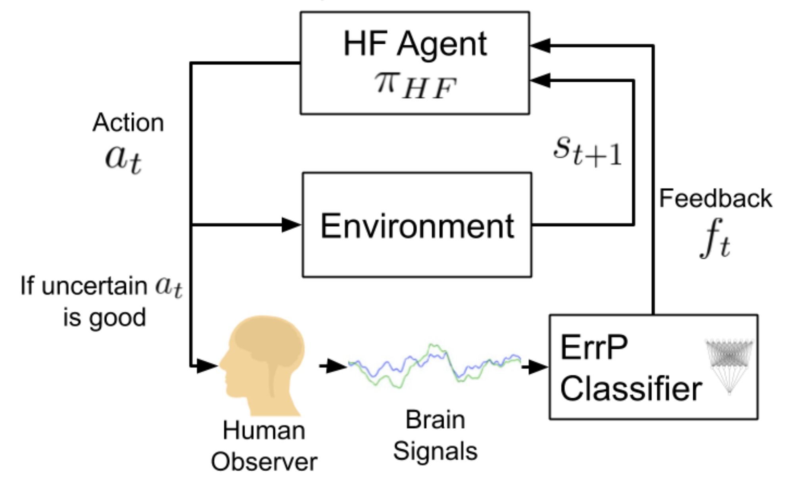
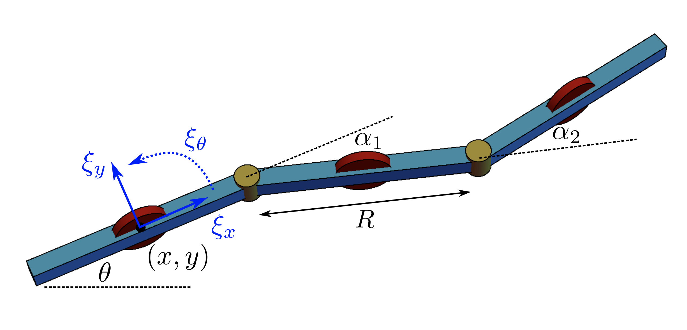

|
Junyao Shi Hi! My name is Junyao Shi (施钧耀). I'm a final-year PhD student in Computer and Information Science (CIS) at University of Pennsylvania GRASP Labortory, advised by Dinesh Jayaraman. I am also currently a Research Intern at Skild AI. My research focuses on robot learning, with a particular emphasis on leveraging internet-scale data and foundation models for building general-purpose robots. I see human history as a continual process of automation: as productivity improves, labor becomes more specialized and diverse, making room for the growth of modern culture, science, and institutions. Robotics, to me, is the next frontier of that process. Previously, I received my B.S. in Computer Science from Columbia University, where I worked with Peter Allen on brain-signal guided robot learning and Tony Dear on reinforcement learning for snake robot locomotion. Feel free to reach out if interested in research discussion / collaboration! |
{kind=link}
News |
|
Publications |

|
Maestro: Orchestrating Robotics Modules with Vision-Language Models for Zero-Shot Generalist Robots
Junyao Shi*, Rujia Yang*, Kaitian Chao*, Selina Wan, Yifei Shao, Jiahui Lei, Jianing Qian, Long Le, Pratik Chaudhari, Kostas Daniilidis, Chuan Wen, Dinesh Jayaraman Under Review project page / paper / supplementary / interactive tool-use analysis We introduce Maestro, a VLM-driven coding agent that autonomously orchestrates perception, planning, control, and learned policy modules into closed-loop, programmatic robot policies. By combining substantial execution autonomy with a broad and extensible tool repertoire, Maestro achieves strong zero-shot generalization on challenging manipulation tasks while remaining interpretable, easily extensible to new embodiments, and capable of autonomous real-world data collection for training fast, robust downstream policies. |

|
VLMgineer: Vision Language Models as Robotic Toolsmiths
George Jiayuan Gao*, Tianyu Li*, Junyao Shi, Yihan Li†, Zizhe Zhang†, Nadia Figueroa, Dinesh Jayaraman Under Review project page / arxiv / paper / twitter We introduce VLMgineer, a novel VLM-driven evolutionary framework that automatically co-design tools and actions to solve robotics task. |
|

|
Points2Reward: Robotic Manipulation Rewards from Just One Video
Junyao Shi, Joshua Smith, Jianing Qian, Dinesh Jayaraman project page / paper Under Review We propose "Points2Reward" (P2R), which effectively computes dense rewards from a single video. To do this, P2R tracks task-relevant object points in task demonstrations and policy rollouts, and matches them to compare the desired and achieved object trajectories to generate reward scores. |

|
ZeroMimic: Distilling Robotic Manipulation Skills from Web Videos
Junyao Shi*, Zhuolun Zhao*, Tianyou Wang, Ian Pedroza†, Amy Luo†, Jie Wang, Jason Ma, Dinesh Jayaraman ICRA, 2025 Best Paper Award 🏆 at CVPR 2025 Workshop on 3D Vision Language Models for Robotic Manipulation: Opportunities and Challenges project page / arxiv / paper / video / code We introduce ZeroMimic, a system that distills robotic manipulation skills from egocentric human web videos for zero-shot deployment in diverse environments with a variety of objects. |
|
|
Composing Pre-Trained Object-Centric Representations for Robotics From "What" and "Where" Foundation Models
Junyao Shi*, Jianing Qian*, Jason Ma, Dinesh Jayaraman ICRA, 2024 project page / paper / video / code POCR chains pre-trained "what" and "where" foundation models to create object-centric representations for robotics. The "where" model identifies object candidates with segmentation masks, which are then bound to slots and encoded by the "what" model, enabling robots to learn policies over these representations. |
|

|
Don't Yell at Your Robot: Physical Correction as the Collaborative Interface for Language Model Powered Robots
Chuye Zhang*, Yifei Simon Shao*, Harshil Parekh, Junyao Shi, Pratik Chaudhari, Vijay Kumar, Nadia Figueroa RSS Genarative Modeling meets HRI Workshop, 2024 project page / paper / video |
|

|
Maximizing BCI Human Feedback Using Active Learning
Zizhao Wang*, Junyao Shi*, Iretiayo Akinola*, Peter Allen IROS, 2020 paper |
|

|
Deep Reinforcement Learning for Snake Robot Locomotion
Junyao Shi, Tony Dear, Scott David Kelly IFAC, 2020 paper |
|
|
Accelerated Robot Learning via Human Brain Signals
Iretiayo Akinola*, Zizhao Wang*, Junyao Shi, Xiaomin He, Pawan Lapborisuth, Jingxi Xu, David Watkins-Valls, Paul Sajda, Peter Allen ICRA, 2020 project page / paper / video |
Teaching |
|
Mentoring |
|
Professional Services |
|
Other Things |
|
In my free time, I perform as a saxophonist with The Protagonist Band at UPenn. |
|
Design and source code from Jon Barron's website.
|